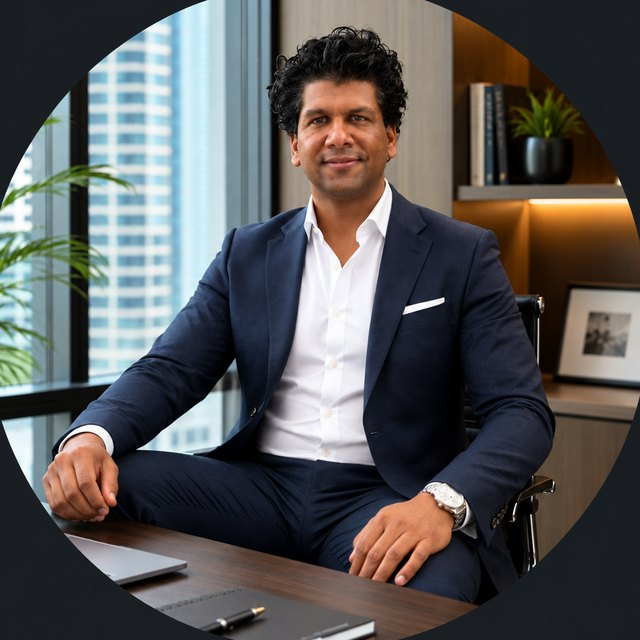
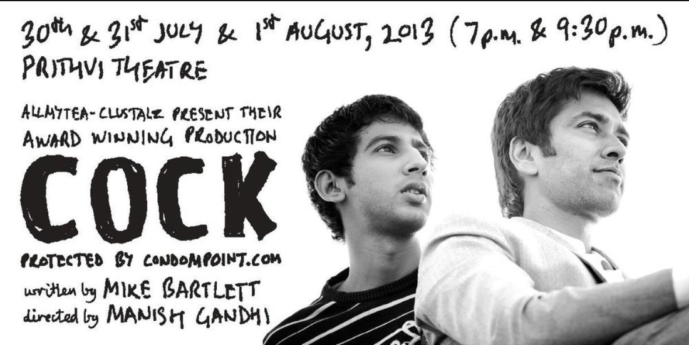

Fifteen Ventures.
Seventeen Years.
Never Raised a Rupee.
Third-generation Mumbai entrepreneur. Finance graduate from Penn State, intern at Merrill Lynch Chicago, back in India by 2006. Since 2008 he has built fifteen ventures across manufacturing, e-commerce, EdTech and B2B software — including one that held a national apparel brand as one of only two approved vendors for eight years. Every one of them funded from cash flow. No angels, no debt, no outside capital, ever. Clicarity is the first time he has asked.

One Machine, and a
Scooter Full of Paper.
This is not a story that begins with a founder and an idea. It begins two generations earlier, with a man who bought a single machine.
Puneet's grandfather held a job at one company his entire working life while raising two sons. What he gave them was not money — it was a start: one machine and an industrial unit.
His father built from there. Delivering xerox paper on the back of a scooter. Travelling city to city looking for business. Eventually opening his own printing press — Paper Print Services, founded 1987 — which went on to print for HUL, Cadbury, Raymond, Zodiac, Siyaram, Etihad and Jet Airways.
Puneet was given something his father never had: a choice. He did not want to join the printing business. He did anyway — but never only that. For fifteen years the press funded everything else he tried.
"I did not want to be part of the family printing business. However, I was always a part of it — it was my cash cow for all my projects alongside."
He Was Offered 2%
of What Became VistaPrint.
In 2007, a year after returning from the US, the CEO of PrintBell offered Puneet a 2% stake in the company.
He turned it down. Not out of caution — out of confidence. He was certain he could build something better himself.
PrintBell is VistaPrint India today.
He has never hidden this. It appears on the first working slide of his own presentation, under the heading "Good Decision / Bad Decision." And it is the honest answer to why any of what follows exists at all.
"This was my motivation to venture into e-commerce — that if he can do it, why can't I?"
Every venture on this page descends from that refusal. Fifteen attempts to prove a point he made to himself in 2007.
Finance First.
Then Everything Else.
The finance training matters less for what it taught about markets and more for what it taught about unit economics. Every venture that follows was measured — sometimes brutally — against whether the numbers actually worked.
Every Venture.
Every Outcome.
Listed in full, with dates and outcomes. Most investor pages show three wins. This shows everything, because the pattern across them is the actual argument.
On the count: fifteen of the businesses below were built by Puneet, including Print World, which began inside Paper Print Services and was separated out so the work carried individual accountability. Two were not his foundings — Paper Print Services, established by his father in 1987 and joined in 2005, and Unified Prints, the holding entity. PPS deserves the credit for the foundation: the clients, the standards and the reputation existed before he arrived.
Zodiac — one of only two approved vendors for roughly eight years, across shirt boxes, tie boxes, tie pouches and carry bags. Etam, the French lingerie brand then in a joint venture with Future Group — sole visual merchandising print vendor from 2008, covering vinyl and flex, in-store pillar banners, elevator banners and display units. HUL — the Dove campaign's first Mumbai launch, which included branding an entire mall at Orchid City Centre. Also Raymond tags, Oxemberg shirt boxes, Staples and Lee Cooper point-of-sale collateral, and NM Medical carry bags. Grown at roughly 20% a year.
Sourcing started with a friend's father, who knew a chemist, who introduced a local distributor — Amit Jain, who taught the industry from the ground up and supplied the business for years. Later, chasing better margins, Puneet worked out the full supply chain and went direct to the CNF agents for each brand — discovering they often discount harder than the brands themselves, because they are chasing their own sales targets. That margin funded the offers that won eight e-commerce platforms as B2B clients, including HomeShop18, IndiaPlaza, Naaptol and Deals&You. Top-3 Google rankings for major brand keywords for roughly four years. Lead sponsor of Mike Bartlett's COCK at Prithvi Theatre in 2013 — more on the production →
Now Count
the People.
Three lakh enquiries. Six thousand paid students. Ten subjects running in parallel for three and a half years. This was the entire team that carried it.
And a network of four and a half thousand.
The six-person core did not find three lakh enquiries on its own. Over three years, more than 4,500 people passed through a remote internship programme, spread across the country — learning outreach and communication by doing it, and carrying LUDIFU into colleges and communities Mumbai could never have reached alone. Roughly four new interns onboarded every day, coordinated through the same automation built for students.
Ten professors who never worked with each other. A designer, external. Three interns on rotation, always new. Four and a half thousand remote interns. Six thousand paying students. None of those groups talked to each other — every one of them talked to one person.
Most companies grow a management layer. This one never did. Class schedules, content sequencing, professor availability, student escalations, payment failures, campaign briefs, intern onboarding, lead follow-up — every department in a normal company, coordinated by a single person, for three and a half years. That is why the automation below stopped being an efficiency exercise and became the only way the business could exist.
A Thousand Sessions by Hand,
Then Never Again.
Between October 2020 and July 2021, Puneet personally conducted four live demo sessions a day.
Not recorded. Live, on Zoom, with professors joining alongside him, roughly a thousand sessions over nine months. Every prospective student who came through a free Excel workshop met the founder in person before they were asked for money.
It worked, and it did not scale. So it was replaced — deliberately, piece by piece, with named tools doing specific jobs:
He Wrote the Lessons Down
While Spending the Money.
These are not retrospective. They are taken from a presentation given in March 2017, roughly three months after the photobook app launched — written while the money was still being spent.
"How do I reach out to more customers by spending less and gaining more?"
That was listed as an open challenge in March 2017. The answer arrived three years later, when six people ran an operation handling three lakh leads — and it became the product now sold as WA.Expert.
We Sponsored the Play.
They Made It Matter.
On 30 and 31 July and 1 August 2013, at 7pm and 9:30pm, AllMyTea-Clustalz staged their award-winning production of COCK — the Olivier Award-winning play by Mike Bartlett — at Prithvi Theatre, Mumbai. No sets, no props: a bare stage and four actors working through questions about identity that Indian mainstream media was largely avoiding at the time.

The writing was Bartlett's. The direction was Manish Gandhi's, who had already won two awards at Thespo for staging it in 2011. The performances belonged entirely to the cast. Sponsorship money paid for some posters and some seats. Everything that made the production good was done by other people.
It remains one of the things Puneet is most glad to have been able to support — and looking at where the company has gone since, the privilege was entirely on our side.
For a brand selling contraceptives online in India, backing a play about identity felt less like marketing and more like being in the right room. Both conversations were difficult to have publicly at the time. That was rather the point.
The production is documented on Nakuul Mehta's official website, which records critical acclaim and sold-out houses at Prithvi Theatre, Mumbai and Jagriti, Bengaluru. Cast and credits additionally verified via Mumbai Theatre Guide and Wikipedia.
Fifteen Ventures.
Zero Outside Capital.
Nobody did. There was no angel round, no debt, and no investor on any of them. The manufacturing business paid for everything.
From 2008, Print World was building a packaging operation for garment and pharmaceutical companies. Not a small one. Its anchor client was Zodiac — shirt boxes, tie boxes, tie pouches and carry bags — where Print World was one of only two approved vendors for roughly eight years, across several different manufacturing processes. Alongside it: Raymond tags, Oxemberg shirt boxes and collaterals, NM Medical carry bags.
Being one of two vendors to a national apparel brand for eight years is not a sales achievement. It is an operational one. It means delivery held, quality held, and the relationship survived every peak season for nearly a decade. That reliability generated the cash that funded everything else on this page.
The Etam work added something the packaging side could not. Visual merchandising is unforgiving — an in-store pillar banner or elevator display either arrives before the launch or it is worthless. Production and delivery ran to around twelve cities, coordinated centrally from Mumbai with local vendors executing and invoicing independently in their own locations. Puneet's role was coordination: briefing, sequencing, chasing and landing every deadline across languages, working cultures and distances.
Manufacturing cash flow, 2008 onward
No angels, no debt, no outside capital
Which is why they overlap.
Look again at the dates on the ventures above and they do not form a queue. CondomPoint, 22SEO, Unified Stores and My Pet Centre were all live at the same time. That was not restlessness — it was cash management.
A self-funded operator cannot afford a gap. If one venture is in a slow quarter, another has to be covering it, and the manufacturing business has to be covering both. Multiple income streams were a requirement, not an ambition. Payments had to keep flowing in or the whole structure stopped.
"Each of my company revenues were funding each other. That is the reason for so many overlapping startups rather than one after the other — there always had to be multiple sources of income."
It also explains the three-year minimum. Puneet could afford to give each venture a genuine run at the market because the press was paying the bills — and he could afford to close them cleanly because no outside investor needed a story told to them first.
"Print World is the successful venture, which I didn't realise until now. I was looking for success while it was right in front of my eyes."
Fourteen experiments were run looking for the win. The win was the business funding them. Print World held a national apparel brand as one of two vendors for eight years, was sole visual merchandising printer for Etam from 2008, handled Dove's first Mumbai campaign, and grew around 20% a year — without ever being thought of as the achievement.
Every Closure Was
a Decision.
"Money was not the reason any of them shut. It was purely practical reasons for each. We realise the importance and value of time — and not being emotionally attached to any business."
Read the outcomes above in sequence and a capability emerges that is genuinely rare in a founder. Amazon started discounting pet products, so My Pet Centre closed — immediately, not after two years of hoping. 22SEO was working and profitable when it was shut, because outsourcing made more structural sense than carrying twelve people. Unified Papers had every vendor signed up and was stopped when customers did not follow.
Knowing when something is finished is a skill most founders never develop. They let things bleed quietly for years, because stopping feels like admitting something. The record here is fifteen ventures, several closed while still performing, each one stopped for a stated reason that holds up on inspection.
For an investor the relevant question is not whether the failures were avoidable. It is whether the person allocating your capital can tell when something is finished, and act on it. That question has fifteen data points.
Written around 2018, before LUCADEMY, before Clicarity, before WA.Expert: "I have tried my hands at many ventures, not being successful at any so far — besides good experience gained." It is included deliberately. Judge what came after against it.
Everything Before This
Was the Training.
Every venture on this page ran for a minimum of three years. That was deliberate.
Three to four years is long enough to read a market honestly — to see whether growth is real or borrowed, whether unit economics hold, and whether the thing can stand without outside money. None of these ventures were funded. Each was given enough time to prove itself on its own terms, and closed when the answer came back clearly.
That was fifteen assessments of Indian markets, conducted at personal cost, with no investor to answer to and no incentive to pretend.
"We ran each of them for at least three years. That gave us a real flavour of the market — enough to assess growth possibilities without funding."
Clicarity is the first one worth funding.
It is the only venture built directly out of the one business that worked. Print World succeeded because of multi-vendor coordination, unforgiving delivery windows and knowing where every job stood at any moment. Clicarity sells exactly that capability as software, to exactly the kind of manufacturer Puneet spent seventeen years being.
It is not a pivot into an unfamiliar market. It is the first venture built on proven competence rather than a hypothesis — sold to an industry he has worked inside since 2005, with trade press already behind it. And it is the first product where the constraint on growth is capital rather than conviction.
To build the world's most intuitive execution system — the one that makes complex operations simple enough that a factory floor team uses it on day one, without being trained.
Everyone else makes operations software powerful. Clicarity makes it obvious. That is the whole bet, and it is the reason people on the floor actually open it.
Conversations with investors are open. There is no deck on this website by design — the numbers are shared privately, with people who are seriously interested, not with competitors.
Six Publications.
Two Ventures.
Also featured on LBB (February 2017) and covered independently by technology reviewers. Puneet Rawat maintains 24,800+ followers on LinkedIn.
Everything You Need
to Explain This to Someone Else.
If you are considering a conversation, at some point you will have to summarise this to a partner or a committee — often days later, from memory. Here is that summary, written so you do not have to. And underneath it, every claim on this page with the place you can check it.
The numbers that matter for Clicarity — customers, retention, pipeline, unit economics — are not on this page by design. They exist, and they are shared privately.
If you want them, ask. A conversation is faster than a document, and you will get straight answers to specific questions.
Request the Numbers →Take What You Need.
Written and kept current here, so nobody has to draft an introduction from scratch. Pick a length, press copy, paste it wherever it is going — an event form, an investor forward, a panel introduction, a press note.
These are maintained on this page. If a detail changes, it changes here first — so anything copied from this page is current as of the site's last update.
Building Something,
or Backing Someone?
If you are an investor, a partner, or a founder working through a problem one of these ventures already ran into — the conversation is open.